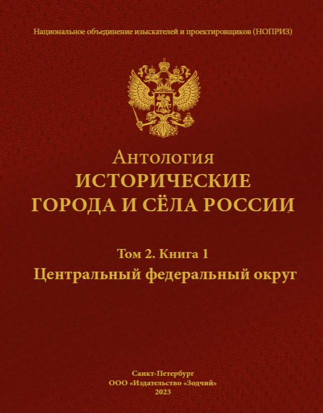

Выбранная книга
01 / 13Антология
Исторические города
и сёла России
Продолжите чтение
в полном издании
На интерактивном столе вы
познакомились с фрагментами
материалов Антологии. Здесь можно
найти нужную книгу и узнать о её
полном издании.
13 книг
в 10 томах
История
архитектуры
и градостроительства
История
городов
и сёл
Изучение
и сохранение
наследия
Антология
Исторические города
и сёла России
Градостроительная история России
в научном собрании из 10 томов
Культурное наследие нашей страны.
История поселений, основанных до 1914 года: архитектура, культурная память и развитие территорий.
10 томов, 13 книг
об исторических
городах и сёлах
История архитектуры
и градостроительства
России
Исследование
исторических
территорий
Знания для сохранения
культурного
наследия
Книжное собрание
13 книг об историко-
градостроительном
наследии России
Антология объединяет исследования градостроительства и материалы об исторических городах и сёлах. Найдите издание по территории или теме, с которой вы познакомились на интерактивном столе.
Выберите книгу, чтобы узнать о ней больше.
13 изданий
Все книги проекта
10 томов — целостная картина
исторической России
Антология объединяет исторические города и сёла России.
Книжное собрание раскрывает историю расселения, архитектуры
и градостроительства через судьбы поселений.
Выберите книгу, чтобы узнать о её содержании
Об издании
Полная
выбранная книга
выбранная книга
Исторические
материалы
материалы
PDF · отправка
не подключена
не подключена
О чём эта книга
В издании рассматриваются

Выбранная книга
- Исторические исследования
- Архитектура поселений
- Градостроительная история
- Культурное наследие территорий
Получить книгу
Это демонстрация получения PDF: письмо не отправляется, адрес не сохраняется на сервере.
Выбранная книга
целиком в PDF
Отправка письма
пока не подключена
Для дальнейшего
исследования
Цифровое распространение ограничено: один email — одна выбранная книга. Повторно доступна та же книга.
Получить электронную версию
Книга целиком в формате PDF придёт вложением в письме на указанный адрес.
Выбранная книга
целиком в PDF
целиком в PDF
Вложением
в письме
в письме
Для дальнейшего
исследования
исследования
Выбор подтверждён
Это демонстрация. Письмо и PDF не отправлены. Адрес не сохранён на сервере.
Антология
Исторические города и сёла России
Photo: Anton Zelenov · Материалы и лицензии